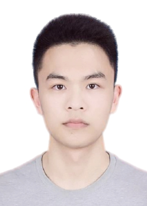

|  | Hongduo Liu, Ph.D. Student |
I am currently a Ph.D. student at Department of Computer Science and Engineering, The Chinese University of Hong Kong (CUHK), under the supervision of Prof. Bei Yu since Fall 2021. Previously, I received my Bachelor Degree of Engineering from University of Electronic Science and Technology of China (UESTC) in 2020.
Hardware/Algorithm Co-Optimization
EDA
[C1] Jiahao Liu, Zhen Zhu, Yong Zhou, Ning Wang, Guanghai Dai, Qingsong Liu, Jianbiao Xiao, Yuxiang Xie, Zirui Zhong, Hongduo Liu, Liang Chang, Jun Zhou, “BioAIP: A Reconfigurable Biomedical AI Processor with Adaptive Learning for Versatile Intelligent Health Monitoring”, 2021 IEEE International Solid-State Circuits Conference (ISSCC), Feb. 13–22, 2021.
SmartMore, Shenzhen, P.R.China, Aug.2020 - Jun.2021
C++ Engineer
Full Postgraduate Studentship, CUHK, 2021-2025
Outstanding Graduate, UESTC, 2020
First Class Outstanding Academic Scholarship, 2017, 2018, 2019